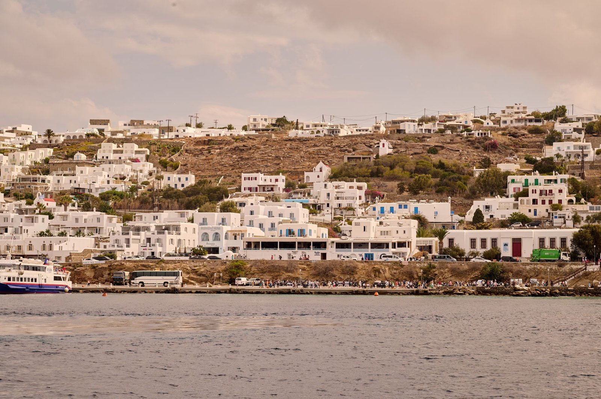

Kythnos rewards visitors who venture beyond the coastline. The island holds two distinct villages that preserve traditional Cycladic life, thermal springs that have drawn bathers for thousands of years, and archaeological sites that reveal continuous habitation spanning nearly three millennia. The landscape invites walking, whether you follow marked trails across the hills or take the coastal path to ancient ruins. Between explorations, tavernas serve the straightforward food of the Cyclades, prepared the way island families have cooked for generations.
Chora, also called Messaria, sits in the center of the island as the main town. The narrow streets wind between whitewashed houses in the classic Cycladic style, with blue-painted doors and window frames. Small squares open unexpectedly as you walk, some shaded by trees, others bright with sun reflecting off white walls. The town serves as the island's administrative center and holds most of the shops and services visitors need.
The Archaeological Museum reopened in 2023 after renovations, displaying finds from three major sites on Kythnos. Objects from Vryokastro, the ancient capital, form the core collection, including pottery, sculptures, and everyday items that show how people lived across centuries. The museum also holds artifacts from Oria Kastro, a medieval fortress, and from Maroula, a Mesolithic settlement that proves humans occupied Kythnos as early as 7500 BC. The collection gives context to the ruins you can visit elsewhere on the island, making the museum worth a stop before or after exploring archaeological sites.
Dryopida stands as the second-largest settlement on Kythnos, home to about 300 residents who maintain the village year-round. The red-tiled roofs distinguish Dryopida from other Cycladic villages, creating a warm terracotta contrast against white walls. The village spreads across a hillside, with houses built close together along stepped streets that climb and descend. Locals still live in the old houses, tending small gardens and greeting visitors who wander through. The architecture reflects centuries of building in the same style, with each generation adding to what came before.
Katafyki Cave, located in Dryopida, ranks among the largest caves in Greece. The cave served as an iron mine in the past, and the mining tunnels now allow visitors to walk deep underground. A free guided tour takes about 15 minutes, leading you through chambers where you can see the geological formations and learn about the mining history. The temperature inside stays cool year-round, a welcome relief on hot summer days. The cave requires some climbing on uneven surfaces, but the tour moves at a comfortable pace for most visitors.
The thermal springs at Loutra have drawn bathers since ancient times, when people traveled to Kythnos specifically for the healing waters. Mineral-rich warm water flows naturally from the ground and runs directly into the sea, creating pools where seawater mixes with the thermal springs. You can bathe for free where the warm water meets the waves, feeling the temperature shift as you move between hot and cool zones. The water contains minerals that locals believe help with joint pain and skin conditions, though most visitors simply enjoy the unusual sensation of warm water flowing into the Aegean. A modern spa facility also operates at Loutra for those who prefer a more controlled bathing environment, but the natural springs remain the main attraction.
Vryokastro served as the ancient capital of Kythnos from the 10th century BC until the 7th century AD, a span of nearly 1,700 years. The site preserves ruins of sanctuaries dedicated to Apollo, artemis, Aphrodite, and Demeter, showing the religious life of the ancient city. You can walk among foundation walls, see where temples once stood, and look out over the same coastal views that ancient residents knew. A walking path from Chora leads to Vryokastro, taking you through the island landscape and arriving at the ruins from above. The site receives few visitors compared to major archaeological destinations in Greece, so you often have the ruins largely to yourself. The continuous occupation over so many centuries makes Vryokastro particularly interesting for anyone curious about how settlements evolve across different eras.
Trails cross Kythnos in multiple directions, connecting villages, beaches, and archaeological sites. The paths follow old routes that islanders used before roads, winding across hills and along the coast. Some trails have been marked and maintained for hikers, while others remain informal tracks that require more attention to follow. The landscape shifts as you walk, from rocky slopes covered in low shrubs to agricultural terraces where farmers still build small plots. Spring brings wildflowers, while summer heat makes early morning or late afternoon the best times to hike. The trails offer a way to see the island's interior, which remains quiet and largely unchanged despite tourism on the coasts.
Tavernas across Kythnos serve the food of the Cyclades, dishes built around what the island produces and what the sea provides. Menus feature grilled fish caught that morning, served whole with lemon and olive oil. Vegetable dishes use tomatoes, zucchini, and eggplant from local gardens, often baked with cheese or prepared as simple salads. Many tavernas make their own cheese from goat and sheep milk, serving it fried as saganaki or fresh with honey. The cooking stays straightforward, relying on quality ingredients rather than complex preparations. Portions tend to be generous, and meals unfold slowly, following the island rhythm where eating means sitting for a while, not rushing through courses.
Once you have explored the villages, caves, and ancient sites, kythnos offers dozens of beaches where you can swim and rest. The coastline holds both organized beaches with facilities and remote coves you reach by footpath or boat, giving you options whether you want services nearby or complete quiet.

